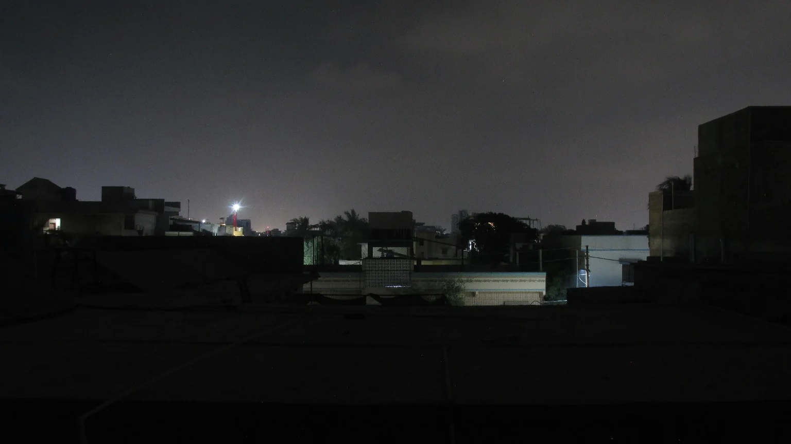
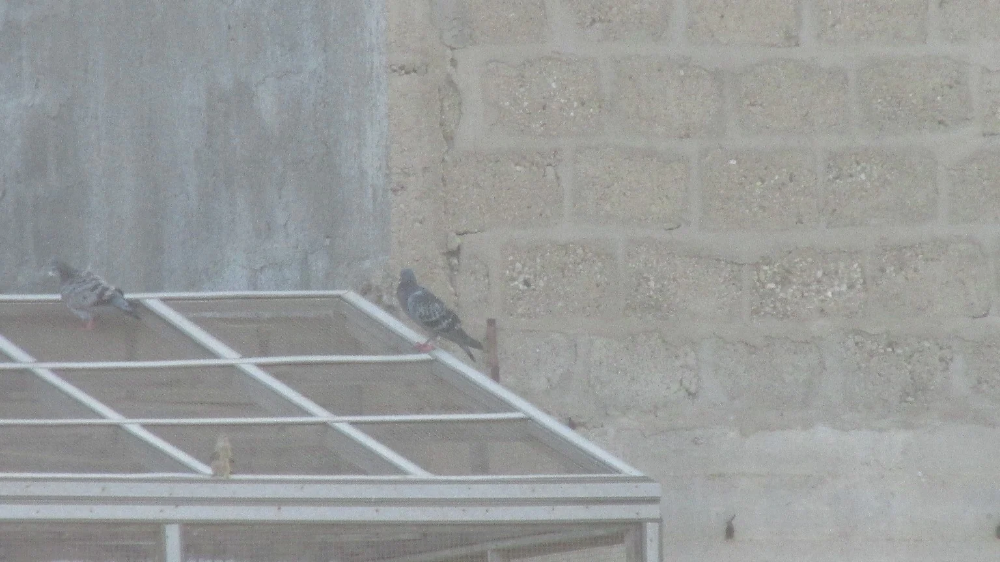
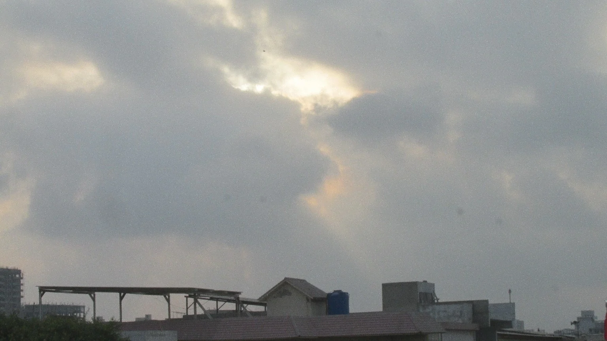
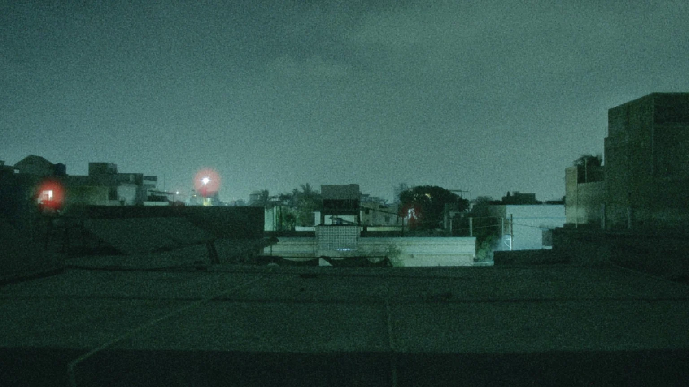
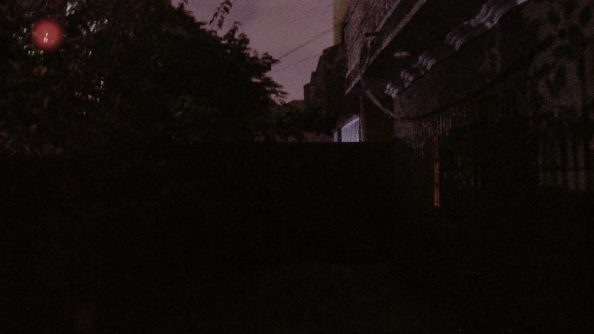
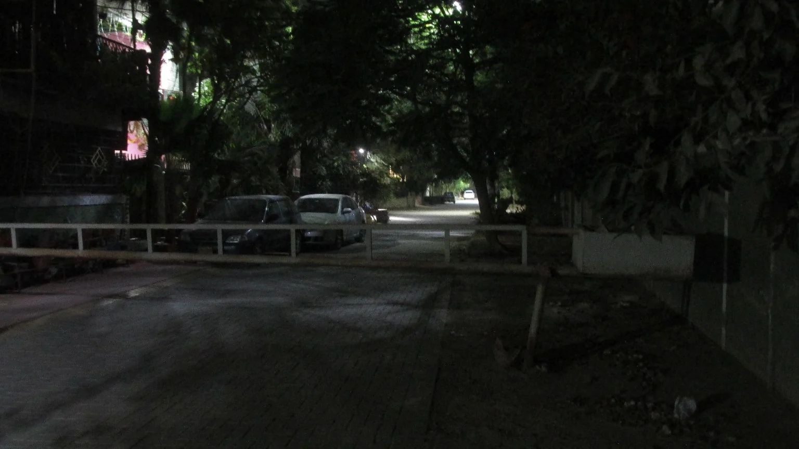
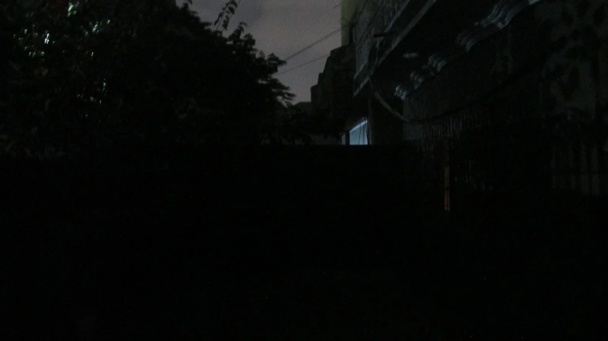
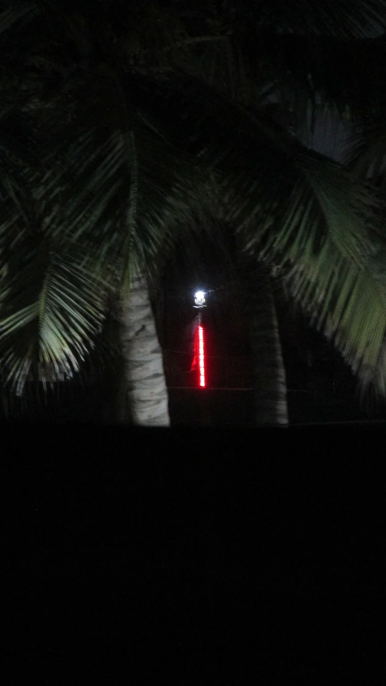

Photo finishing
Colour correction and mood-led edits for personal photos, small portfolios, and social posts.
Quiet corners, familiar streets, palms after dark, and the everyday moments that ask for a second look. Photographs made slowly, with an eye for atmosphere.
 FRAME 001 · AFTER DARK
FRAME 001 · AFTER DARK
A collection of small observations: an unexpected visitor, a patch of sun, a roofline dissolving into the evening.

Small encounters · City

Weather notes · Light

Night study · Nature

Everyday places · Nature

Light studies · Detail

Urban quiet · City

After dark · City

Night study · Nature

Architecture · Detail

Interior notes · Light

A vivid red light suspended between palm trunks after dark.

A pigeon silhouetted against the warm, grainy evening sky.

Late light turns the cloud cover and rooftops into a warm, grainy study.

A dim residential lane receding beneath a canopy of trees.

A distant city skyline seen through a cool green digital-night palette.

Dark trees and residential walls under a muted violet evening sky.

A small rectangle of light breaks through the dark residential scene.

Palm fronds create a natural frame around a distant red light.
18 frames in this selection
“Not every photograph needs a grand subject. Sometimes, all it needs is the right light and a moment of attention.”
 Looking closer / always
Looking closer / alwaysPortrait of the photographer
This is a personal archive of the things I keep noticing: light slipping into a room, rooftops after the day has gone quiet, a bird holding still, or a familiar place looking different at night.
I work with digital photographs and a light-touch editing approach. I'm drawn to early-digital character, muted colours, natural softness, and the little imperfections that make an image feel remembered rather than polished flat.
The aim isn't to make ordinary places look extraordinary. It's to pay enough attention to see what is already there.
A few services that sit naturally alongside the personal work.
Colour correction and mood-led edits for personal photos, small portfolios, and social posts.
Atmospheric photographic artwork for singles, playlists, and independent music projects.
A considered set of images for a small brand, a personal project, or a place worth documenting.
For photo edits, album artwork, small commissions, or a simple conversation about making something visual, drop me a note.
Or email directly: jawwadnoaman7@gmail.com